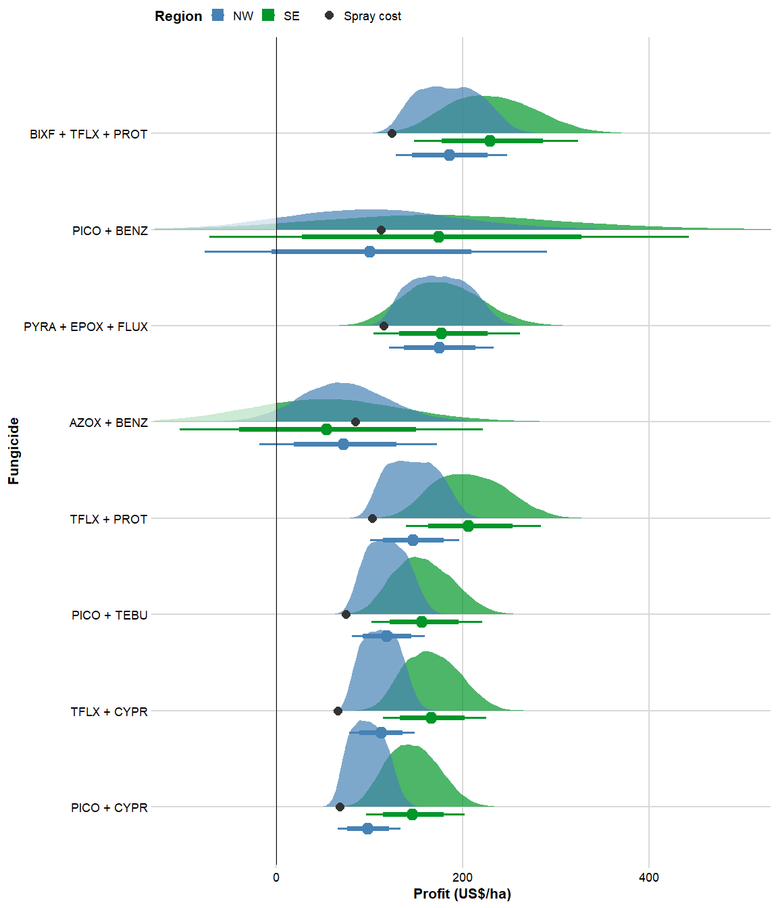

library(tidyverse)
library(readxl)
library(cowplot)
library(gsheet)
library(stats4)
library(minpack.lm)
library(ggdist)# Severity on check
eff_yld_data = read_excel("data/data_simulation.xlsx")
cost_data = read_excel("data/costs.xlsx")
decline = read_excel("data/Elatus_Vessarya_yld_simulation.xlsx")decline_slope_AB = decline %>%
filter(mod == "slope",
fungicide == "AZOX + BENZ")
decline_intercep_AB = decline %>%
filter(mod == "intercept",
fungicide == "AZOX + BENZ")
decline_slope_PB = decline %>%
filter(mod == "slope",
fungicide == "PICO + BENZ")
decline_intercep_PB = decline %>%
filter(mod == "intercept",
fungicide == "PICO + BENZ")#soy price
price = c(0.25,0.35)
box = data.frame()
#number of simulations per fungicide
n = 40000
for(i in 1:length(cost_data$cost)){
cost = runif(n,0.95*cost_data$cost[i], 1.05*cost_data$cost[i])
soy_price = runif(n, price[1], price[2])
if(eff_yld_data$fungicide[i] == "AZOX + BENZ" & eff_yld_data$region[i] == "North"){
m_inter = decline_intercep_AB[1,]$mean
se_inter = decline_intercep_AB[1,]$SE
m_slope = decline_slope_AB[1,]$mean
se_slope = decline_slope_AB[1,]$SE
yield = rnorm(n,m_inter, se_inter)+5*rnorm(n,m_slope,se_slope)
}else if(eff_yld_data$fungicide[i] == "AZOX + BENZ" & eff_yld_data$region[i] == "South"){
m_inter = decline_intercep_AB[2,]$mean
se_inter = decline_intercep_AB[2,]$SE
m_slope = decline_slope_AB[2,]$mean
se_slope = decline_slope_AB[2,]$SE
yield = rnorm(n,m_inter, se_inter)+5*rnorm(n,m_slope,se_slope)
}else if(eff_yld_data$fungicide[i] == "PICO + BENZ" & eff_yld_data$region[i] == "North"){
m_inter = decline_intercep_PB[1,]$mean
se_inter = decline_intercep_PB[1,]$SE
m_slope = decline_slope_PB[1,]$mean
se_slope = decline_slope_PB[1,]$SE
yield = rnorm(n,m_inter, se_inter)+5*rnorm(n,m_slope,se_slope)
}else if(eff_yld_data$fungicide[i] == "PICO + BENZ" & eff_yld_data$region[i] == "South"){
m_inter = decline_intercep_PB[2,]$mean
se_inter = decline_intercep_PB[2,]$SE
m_slope = decline_slope_PB[2,]$mean
se_slope = decline_slope_PB[2,]$SE
yield = rnorm(n,m_inter, se_inter)+5*rnorm(n,m_slope,se_slope)
}else if(eff_yld_data$region[i] == "North" ){
m_yld = eff_yld_data$mean_yld[i]
se_yld = eff_yld_data$SE_yld[i]
yield = rnorm(n, m_yld,se_yld)
}else if(eff_yld_data$region[i] == "South"){
m_yld_n = eff_yld_data$mean_yld[i-8]
se_yld_n = eff_yld_data$SE_yld[i-8]
yield_n = rnorm(n, m_yld_n,se_yld_n)
m_yld_s = eff_yld_data$mean_yld[i]
se_yld_s = eff_yld_data$SE_yld[i]
yield_s = rnorm(n, m_yld_s,se_yld_s)
yield = yield_n+yield_s
}
income = yield*soy_price
profit = income - cost
Prob = mean(profit>=0)
# Prob
lil_box = data.frame(fungicide = eff_yld_data$fungicide[i],
region =eff_yld_data$region[i],
yield,
income,
cost,
soy_price,
profit,
Prob)
box = box %>%
bind_rows(lil_box)
}box %>%
group_by(fungicide, region) %>%
mutate(cost = mean(cost)) %>%
mutate(fungicide = factor(fungicide, levels = c("PICO + CYPR", "TFLX + CYPR", "PICO + TEBU", "TFLX + PROT", "AZOX + BENZ", "PYRA + EPOX + FLUX", "PICO + BENZ", "BIXF + TFLX + PROT"))) %>%
ggplot(aes(profit, fungicide),
position = position_dodge(width = 0.3))+
stat_slab(aes(fill = region, alpha = stat(x > 0)))+
stat_pointinterval(aes(group=region, color= region),
# position = position_dodge(width = 0.2),
position = position_dodge(width = .6, preserve = "single"),
# color = "black",
.width = c(0.75,0.95))+
geom_point(data = cost_data, aes(x=cost, shape = "Spray cost"),
size =2,
# position = position_nudge(y = .18),
color ="gray20")+
geom_vline(xintercept = 0, color = "black", size= 0.2)+
scale_fill_manual(values = c("steelblue","#009628"), labels=c("NW", "SE"))+
scale_color_manual(values = c("steelblue","#009628"), labels=c("NW", "SE"))+
scale_shape_manual(values= 16)+
scale_alpha_manual(values = c(0.2,0.7), labels = c("Positive", "Negative"))+
theme_minimal_grid(font_size = 8)+
guides(alpha =F)+
labs(x = "Profit (US$/ha)",
y = "Fungicide",
shape ="",
alpha = "Profit",
color = "Region",
fill = "Region")+
coord_cartesian(xlim = c(-100,500))+
theme(title = element_text(face = "bold"),
legend.position = "top")
ggsave("figures/dist.png",dpi = 600, height = 5, width = 4)box %>%
group_by(region, fungicide) %>%
summarise(mean = mean(profit),
q0.5 = quantile(profit,0.5),
q0.025 = quantile(profit,0.025),
q0.975 = quantile(profit,0.975)) %>%
arrange(region,q0.5)## `summarise()` regrouping output by 'region' (override with `.groups` argument)(164.94-126.56)/126.56## [1] 0.30325541-(126.56)/164.94## [1] 0.2326907